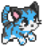

Player one controls the blue cat using:
'W' to accelerate forward
'A' to rotate left and 'D' to rotate right
Player two controls the pink cat using:
'Up arrow' to accelerate forward
'Left arrow' to rotate left and 'Right arrow' to rotate right
The objective is the hit the grav-ball into the other players basket. Doing so will yield a point and the grav-ball and players will be reset to battle again. The first player to ten points wins the game!
If the grav-ball begins to roll on the ground it will be reset to the center using high-tech smoke and mirrors. Use this to your advantage.
WARNING! The scientists behind Project: Catsketball have publicly stated that the grav-ball has a mind of its own. We are not liable for any injury caused by the sporadic nature of this most peculiar object.